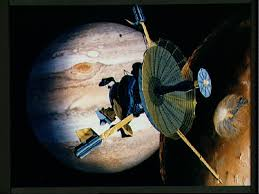
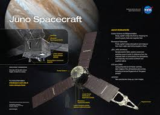
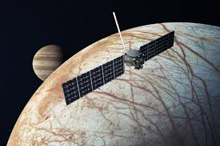

Galileo (1989-2003)
The Galileo spacecraft orbited Jupiter, providing groundbreaking data about the planet and its moons.
 galelio Mission at NASAPioneer 10 & 11 (1972-1973)
The Pioneer missions provided the first detailed close-up images of Jupiter.
 pioneer Mission at NASA
pioneer Mission at NASA
Juno (2011-Present)
Juno is currently studying Jupiter’s atmosphere, magnetic field, and auroras.
 junoMission at NASAEuropa Clipper (2024 Launch)
This mission will study Europa, one of Jupiter's moons, to investigate its potential to support life.
 junoMission at NASA